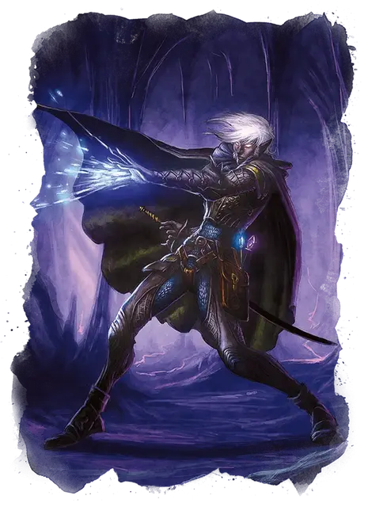

Дроу арахномант
Drow Arachnomancer
Средний Гуманоид (Эльф), хаотично-злой

Класс Доспеха 15 (проклёпанный кожаный доспех)
Хиты 162 (25к8 + 50)
Скорость 30 футов, лазая 30 футов
| мод | спас | ||
|---|---|---|---|
| СИЛ | 11 | +0 | +0 |
| ЛОВ | 17 | +3 | +3 |
| ТЕЛ | 14 | +2 | +7 |
| мод | спас | ||
|---|---|---|---|
| ИНТ | 19 | +4 | +9 |
| МДР | 14 | +2 | +2 |
| ХАР | 16 | +3 | +8 |
Навыки Восприятие +7, Магия +9, Природа +9, Скрытность +8
Сопротивление урону яд
Чувства слепое зрение 10 футов, тёмное зрение 120 футов, пассивное Восприятие 17
Языки может общаться с пауками, Подземный, Эльфийский
Опасность 13 (10000 опыта)
Бонус мастерства +5
Среда обитания Подземье
Особенности
Смена формы (перезарядка после короткого или продолжительного отдыха). Дроу, используя бонусное действие, может магическим образом превратится в Гигантского паука, оставаясь в этой форме до 1 часа. Он может вернуть свою изначальную форму бонусным действием. Все его статистики, кроме размера, остаются одинаковыми во всех формах. Он может говорить и накладывать заклинания, находясь в форме Гигантского паука. Всё несомое и носимое им снаряжение, сливается с новым обликом. Он не может активировать, использовать, владеть или иным образом извлекать выгоду из любого своего снаряжения. Он принимает истинный облик, когда умирает.
Наследие фей. Дроу совершает с преимуществом спасброски от очарования, и магия не может его усыпить.
Врождённое колдовство. Базовой характеристикой арахноманта является Харизма (Сл спасброска от заклинания 16).
Он может накладывать следующие заклинания, не нуждаясь в материальных компонентах:
• Заговоры (неограниченно): пляшущие огоньки [dancing lights];
• 1/день каждое: тьма [darkness], огонь фей [faerie fire], левитация [levitate] (только на себя);
Использование заклинаний. Дроу является заклинателем 16 уровня. Его базовой характеристикой является Харизма (Сл спасброска от заклинания 16, +8 к атакам заклинаниями). Он восстанавливает потраченные ячейки заклинаний после завершения короткого или продолжительного отдыха. Он знает следующие заклинания колдуна:
• Заговоры (неограниченно): леденящее прикосновение [chill touch], мистический заряд [eldritch blast], волшебная рука [mage hand], ядовитые брызги [poison spray];
• 1– 5 уровни (3 ячейки 5 уровня): призыв животных [conjure animals] (только пауки), корона безумия [crown of madness], переносящая дверь [dimension door], рассеивание магии [dispel magic], ужас [fear], полёт [fly], гигантское насекомое [giant insect], удержание чудовища [hold monster], нашествие насекомых [insect plague], невидимость [invisibility], прикосновение вампира [vampiric touch], паутина [web], ведьмин снаряд [witch bolt];
• 1/день каждое: подчинение чудовища [dominate monster], эфирность [etherealness], разящее око [eyebite];
Паучье лазание. Дроу может лазать по сложным поверхностям, включая потолки, без совершения проверок характеристик.
Чувствительность к солнечному свету. Находясь на солнечном свету, дроу совершает с помехой броски атаки, а также проверки Мудрости (Восприятие), полагающиеся на зрение.
Хождение по паутине. Дроу игнорирует ограничения перемещения, вызванные паутиной.
Действия
Мультиатака. Дроу совершает две атаки Ядовитого касания или две атаки Укусом. Первая из этих атак, попавшая в раунде,наносит дополнительных 26 (4к12) урона ядом по цели.
Ядовитое касание (только в облике гуманоида). Рукопашная атака оружием: +8 к попаданию, досягаемость 5 футов, одна цель. Попадание: 28 (8к6) урона ядом.
Укус (только в облике Гигантского паука). Рукопашная атака оружием: +7 к попаданию, досягаемость 5 футов, одно существо. Попадание: 12 (2к8+3) колющего урона, и цель должна пройти спасбросок Телосложения Сл 15, получая 26 (4к12) урона ядом при провале, или половину этого урона при успехе. Если урона ядом уменьшает хиты цели до 0, то цель остаётся стабилизированной, но отравленной на 1 час, даже если позже восстановит хиты, и остаётся парализованной,пока отравлена таким образом.
Паутина (только в облике Гигантского паука; перезарядка 5-6). Дальнобойная атака оружием: +8 к попаданию, дистанция 30/60 футов, одно существо. Попадание: Цель становится опутанной паутиной. Опутанная цель может действием совершить проверку Силы Сл 15, разрывая паутину при успехе. Паутину можно атаковать и уничтожить (КД 10; 5 хитов; уязвимость к урону огнём; иммунитет к дробящему урону, а также урону ядом и психической энергией).
Описание
Заклинатели Дроу, ищущие возможности полностью посвятить себя Паучьей Королеве, иногда вступают на тёмный путь арахноманта. Жертвуя душу и тело Лолс, они получают невероятную мощь и необычную связь с древними пауками из Провалов Демонической Паутины, насытившись магией из этого жуткого места.